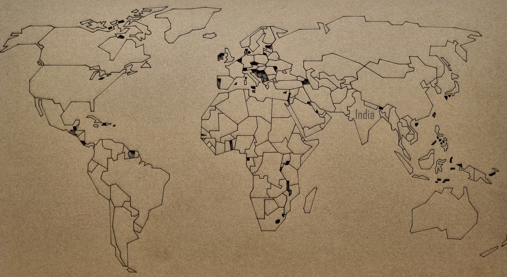

Laser Cutting
Embarking on the precision-driven journey of laser cutting, I wielded the transformative power of light to craft intricate designs from various materials. With software like Adobe Illustrator guiding my digital creations, I fine-tuned settings to achieve flawless cuts and engravings. Challenges became opportunities for growth as I navigated technical intricacies and material idiosyncrasies, emerging resilient and skilled. Exploring diverse substrates expanded my creative horizons, from wood and acrylic to fabric and paper. Reflecting on this odyssey, I found laser cutting to be a testament to creativity, innovation, and precision—a journey that continues to unfold with each meticulously crafted creation.
Laser Technology
Beyond the familiar glow of a flashlight lies the fascinating world of lasers. These devices, standing for "Light Amplification by Stimulated Emission of Radiation," don't merely emit light – they orchestrate it. Unlike a flashlight's scattered photons, a laser produces a highly focused, coherent beam. Imagine a symphony orchestra where every instrument plays in perfect unison – that's the essence of laser light. This remarkable property imbues lasers with exceptional precision, making them ideal for applications demanding pinpoint accuracy.
From the delicate world of microsurgery, where lasers can remove tumors with minimal collateral damage, to the industrial realm where CO2 lasers slice through steel with unmatched precision, the transformative power of lasers is undeniable. Even the humble CD player relies on the focused beam of a diode laser to read data. This versatility extends far beyond these examples, with lasers playing a vital role in advancements across medicine, manufacturing, and communication. As research continues to unlock new possibilities, the future of laser technology promises even more groundbreaking applications that will shape our world.
SIL Laser Machine

This SIL machine packs a 100W CO2 laser punch, which is pretty good for a machine its size and weight (around 250kg). While the size you mentioned (3m x 2m) seems a bit large for the weight, it could be that the 3-meter dimension refers to the length of the cutting bed where the laser head travels. More typical dimensions might be around 1m x 0.5m.
The 100W power is good for cutting a variety of thin materials like wood, acrylic, and plastics. It can also engrave various materials and mark parts for identification.
Here's the cool part: the laser beam is super precise, so you can get clean cuts and sharp engravings. Plus, it has a water chiller to keep things cool and a fume extractor to suck up any dust or fumes created during cutting.
Maxing Out the Use Of Materials
MDF (Medium-Density Fibreboard):
Pros: Great for intricate designs due to clean, precise cuts. Takes paint and adhesives well, making it ideal for crafting and prototyping. Relatively affordable.
Cons: Can produce burnt edges on thicker pieces. Requires proper ventilation to avoid dust inhalation. May not be suitable for applications requiring high strength or moisture resistance.
Cardboard:
Pros: Very affordable and readily available. Excellent for quick prototypes or disposable packaging due to its lightweight nature. Allows for intricate designs with clean cuts.
Cons: Limited thickness capabilities compared to other materials. Not as strong or durable as MDF or acrylic. May char or burn on thicker pieces.
Acrylic:
Pros: Excellent for clean cuts and polished edges, resulting in a professional look. Available in a wide range of colors and even transparent options. Strong and durable, making it suitable for various applications.
Cons: More expensive than MDF or cardboard. Requires careful handling to avoid scratching. Can melt at the cutting edges if laser settings are not adjusted properly.
| Material | Pros | Cons |
|---|---|---|
| MDF | Clean cuts, good for crafts, affordable | Burnt edges on thicker pieces, dust inhalation, limited moisture resistance |
| Cardboard | Affordable, intricate designs, lightweight | Limited thickness, not strong or durable, burns on thicker pieces |
| Acrylic | Clean cuts, polished edges, strong and durable | Expensive, scratches easily, melts at improper settings |
Parametric Design
In parametric design, you act as a conductor, using software to orchestrate the creation of complex designs. Here's the breakdown:
Define Parameters:
You set the variables that govern your design. Think dimensions, materials, angles, even environmental factors like sunlight or wind. These are the dials on your control panel.
Craft the Algorithm:
You build a set of instructions (the recipe) for the software. This tells it how to manipulate the parameters to achieve your design goals.
Explore and Refine:
The software generates designs based on your recipe. You can then adjust the parameters and algorithms to explore variations and refine your creation.
This approach allows you to:
Automate Repetitive Tasks:
No more tedious manual adjustments. The software handles the legwork.
Optimize for Specific Needs:
Algorithms analyze data to create designs that are strong, energy-efficient, or perfectly fit a specific space.
Craft Unique and Complex Forms:
Imagine intricate shapes that would be impossible to draw by hand. Parametric design makes them achievable.
Embarking on the Laser Cutting Odyssey
As I set foot on the path of laser cutting, I felt a surge of excitement tinged with anticipation coursing through me. The allure of transforming raw materials into intricately cut designs with precision and finesse was irresistible, beckoning me into a world of creativity and innovation.
Discovering the Tools of the Trade
My journey began with the discovery of laser cutting technology, a marvel of modern engineering that promised to turn my wildest design fantasies into tangible reality. Amidst the array of options available, one tool stood out as the epitome of precision and versatility—the laser cutter. With its powerful beam of light and intricate control systems, the laser cutter emerged as my trusted companion on this exhilarating voyage.
Navigating the Realm of Software: From Design to Execution

With the laser cutter at my side, I delved into the realm of software, seeking the perfect companion to bring my digital designs to life. Among the myriad options available, I found solace in software suites like Adobe Illustrator and CorelDRAW, whose intuitive interfaces and robust features provided the perfect canvas for my creative endeavors. With each click and stroke of the digital pen, I crafted intricate designs that would soon be etched into reality by the laser cutter's unforgiving beam.
Mastering the Art of Precision: From Concept to Creation


As I honed my skills in the digital realm, I began to unravel the intricacies of laser cutting—a delicate dance between power, speed, and material. With each design meticulously crafted and refined, I embarked on a journey of precision, ensuring that every cut and engraving was executed with the utmost accuracy and finesse. From delicate filigree patterns to bold geometric shapes, each creation was a testament to the mastery of my craft and the precision of the laser cutter's beam.
Navigating the Challenges: Trials and Triumphs

Yet, the path to mastery was not without its challenges. Along the way, I encountered obstacles that tested my resolve and ingenuity, from material inconsistencies to unexpected machine errors. Yet, with each setback came an opportunity for growth, as I learned to troubleshoot and adapt with resilience and determination. Through perseverance and tenacity, I overcame every hurdle, emerging stronger and more skilled with each triumph.
Pushing the Boundaries of Possibility: Innovation and Exploration

Armed with newfound knowledge and a spirit of innovation, I pushed the boundaries of what was possible with laser cutting technology. From traditional materials like wood and acrylic to unconventional substrates like fabric and leather, I experimented with a myriad of mediums, exploring new techniques and pushing the limits of my imagination with each passing project. With the laser cutter as my creative accomplice, I embarked on a journey of endless exploration, forever pushing the boundaries of what could be achieved in the captivating world of laser cutting.
Reflecting on the Journey: A Testament to Creativity and Innovation

As I paused to reflect on my journey, I marveled at the transformative power of laser cutting—a technology that transcended mere utility and emerged as a catalyst for creativity and innovation. With each creation meticulously crafted and lovingly executed, I had not only honed my skills as a maker but had also unlocked a world of endless possibilities, where the only limit was the bounds of my imagination.It was an amazing Journey.
With each meticulous application of the laser's focused energy, I wasn't simply achieving precise material manipulation; I was meticulously crafting intricate tapestries of form and function. Witnessing the birth of each meticulously rendered design from the raw potential of the module served as a constant reminder of the profound impact this technology held. My proficiency as a designer blossomed alongside my deepening understanding of the module's capabilities. Every project chipped away at the perceived limitations, revealing a breathtaking vista of possibilities.